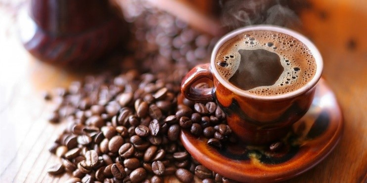

Kafija- melnais grēks vai veselības panaceja?
Kafija ir viens no tiem produktiem, par kuru visbiežāk dzirdētais ir vai nu melns vai balts. Taču kā jau ar visu- domas uztura speciālistu un zinātnieku vidū dalās, un monētai, kā vienmēr, ir divas puses. Arī šajā rakstā mēģināšu šķetināt kafijas plusus un mīnusus, taču uzreiz varu pateikt vienu (ko no manis var dzirdēt gana bieži) - kas vienam zāles, otram inde!